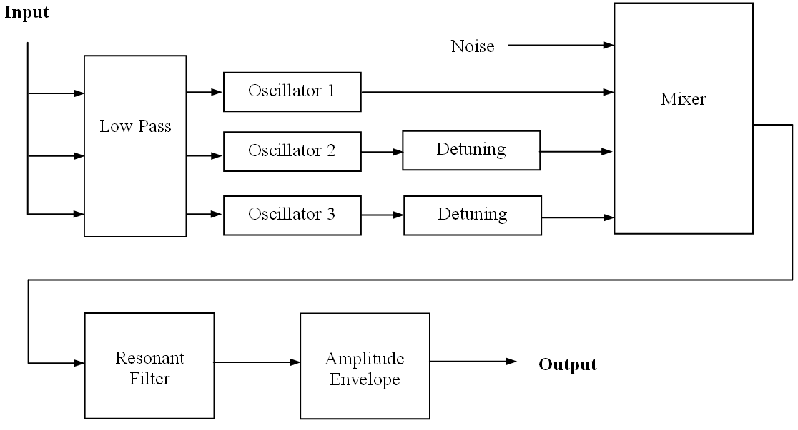

To use a library function, you
must first load the library, e.g. (load "pianosyn") loads the piano synthesis
library. The libraries are all located in the lib directory, and you
should therefore include this directory on your XLISPPATH variable. (See
Section "Introduction and Overview".) Each library is documented in one of the following
sections. When you load the library described by the section, all functions
documented in that section become available.
The other interesting feature is
The second compressor is called
The function works by cross-fading between the normal signal and a filtered
signal as opposed to changing filter coefficients.
There is much room for expansion and experimentation with this library. Other
effects might include distortion in certain bands (for example, there are
commercial effects that add distortion to low frequencies to enhance the sound
of the bass), separating bands into different channels for stereo or multi-channel
effects, adding frequency-dependent reverb, and performing dynamic compression,
limiting, or noise gate functions on each band. There are also opportunities for
cross-synthesis: using the content of bands extracted from one signal to modify
the bands of another. The simplest of these would be to apply amplitude envelopes
of one sound to another. Please contact us (dannenberg@cs.cmu.edu) if you
are interested in working on this library.
Drum sounds and patterns are specified in the
The second set of specifications is of beat patterns. A beat pattern is given
by a line in the following form:
Once data is loaded, there are several functions to access drum patterns and
create drum sounds (described below). The
The basic functionality of the Minimoog has been implemented, including the
often-used "glide". The glide feature essentially low-pass filters the control
voltage sequence in order to create sweeps between notes.
Figure 21 is a simplified schematic of the data flow in the Moog.
The control lines have been omitted.
Figure 21: System diagram for Minimoog emulator.
The most recognizable feature of the Minimoog is its resonant filter, a
Four-Pole Ladder Filter invented by Robert Moog. It is simply implemented
in a circuit with four transistors and provides an outstanding 24 dB/octave
rolloff. It is modeled here using the built-in Nyquist resonant filter.
One of the Moog filter features is a constant Q, or center frequency to
bandwidth ratio. This is implemented and the user can control the Q.
The user can control many parameters using keywords. Their default values,
acceptable ranges, and descriptions are shown below. The defaults were
obtained by experimenting with the official Minimoog software synthesizer
by Arturia.
Sound 2 (articulation, with amplitude release):
Sound 3 (glide):
Sound 4 (keyword parameters): Filter attack and decay are purposely
longer than notes being played with articulation equal to 1.
Sound 5: This example illustrates the ability to completely define a new
synthesizer with different parameters creating a drastically different
sound. Sine waves are used for wavetables. There is a high value for glide.
set s = {{80 .4 .75} {28 .2 1} {70 .5 1} {38 1 .5}}
Sound 6: This example has another variation on the default
parameters.
Statistics
The file statistics.lsp defines a class and functions to compute simple statistics, histograms, correlation, and some other tests. See the source code for complete details.
Plots
The Nyquist IDE has a simple facility to plot signals. For more advanced plotting, you can use gnuplot.sal to generate plots for gnuplot, a separate, but free program. See the source for details.
Labeling Audio Events, Marking Audio Times, Displaying Marked Audio Times
The labels.sal program can convert lists to label files and label files to lists. Label files can be loaded along with audio in Audacity to show metadata. See the source for details.
Linear Regression
See regression.sal for simple linear regression functions.
Vector Math, Linear Algebra
See vectors.lsp for a simple implementation of vector arithmetic and other vector functions.
Piano Synthesizer
The piano synthesizer (library name is pianosyn.lsp) generates
realistic piano tones using a multiple wavetable implementation by Zheng (Geoffrey)
Hua and Jim Beauchamp, University of Illinois. Please see the notice about
acknowledgements that prints when you load the file. Further informations and
example code can be found in
demos/piano.htm.
There are several useful functions in this library:
piano-note(duration, step,
dynamic) [SAL]
(piano-note duration step dynamic) [LISP]
piano-note-2(step, dynamic) [SAL]
(piano-note-2 step dynamic) [LISP]piano-note except the duration is nominally 1.0.
piano-midi(midi-file-name) [SAL]
(piano-midi midi-file-name) [LISP]
piano-midi2file(midi-file-name,
sound-file-name) [SAL]
(piano-midi2file midi-file-name sound-file-name) [LISP]Dymanics Compression
To use these functions, load the file compress.lsp. This library
implements a compressor originally intended for noisy speech audio, but
usable in a variety of situations.
There are actually two compressors that can be used in
series. The first, compress, is
a fairly standard one: it detects signal level with an RMS
detector and uses table-lookup to determine how much gain
to place on the original signal at that point. One bit of
cleverness here is that the RMS envelope is "followed" or
enveloped using snd-follow, which does look-ahead to anticipate
peaks before they happen.
compress-map, which builds
a map in terms of compression and expansion. For speech, the recommended
procedure is to figure out the noise floor on the signal you are compressing
(for example, look at the signal where the speaker is not talking).
Use a compression map that leaves the noise alone and boosts
signals that are well above the noise floor. Alas, the compress-map
function is not written in these terms, so some head-scratching is
involved, but the results are quite good.
agc, and it implements automatic gain
control that keeps peaks at or below 1.0. By combining compress and
agc, you can process poorly recorded speech for playback on low-quality
speakers in noisy environments. The compress function modulates the
short-term gain to to minimize the total dynamic range, keeping the speech at
a generally loud level, and the agc function rides the long-term gain
to set the overall level without clipping.
compress-map(compress-ratio,
compress-threshold,
expand-ratio, expand-threshold, limit: limit, transition:
transition) [SAL]
(compress-map compress-ratio compress-threshold
expand-ratio expand-threshold [:limit limit :transition
transition :verbose verbose]) [LISP]limit: (a keyword parameter) to T.
This effectively changes
the compression ratio to infinity at 0dB. If limit: is nil
(the default), then the compression-ratio continues to apply above 0dB.
transition:, sets the amount below the
thresholds (in dB) that a smooth transition starts. The default is 0,
meaning that there is no smooth transition. The smooth transition is a
2nd-order polynomial that matches the slopes of the straight-line compression
curve and interpolates between them.
shape
function. The sound maps input
dB to gain. Time 1.0 corresponds to 0dB, time 0.0 corresponds to
-100 dB, and time 2.0 corresponds to +100dB, so this is a
100hz "sample rate" sound. The sound gives gain in dB.
db-average(input) [SAL]
(db-average input) [LISP]
compress(input, map, rise-time, fall-time [, lookahead]) [SAL]
(compress input map rise-time fall-time
[lookahead)] [LISP]compress-map (see above). Adjustments in gain have
the given rise-time and fall-time. Lookahead tells how far ahead to look
at the signal, and is rise-time by default.
agc(input,
range, rise-time, fall-time [, lookahead]) [SAL]
(agc input range rise-time fall-time
[lookahead]) [LISP]Clipping Softener
This library, in soften.lsp, was written to improve the quality of
poorly recorded speech. In recordings of speech, extreme clipping generates
harsh high frequency noise. This can sound particulary bad on small speakers
that will emphasize high frequencies. This problem can be ameliorated by
low-pass filtering regions where clipping occurs. The effect is to dull the
harsh clipping. Intelligibility is not affected by much, and the result can
be much more pleasant on the ears. Clipping is detected simply by looking for
large signal values. Assuming 8-bit recording, this level is set to 126/127.
soften-clipping(snd,
cutoff) [SAL]
(soften-clipping snd cutoff) [LISP]Graphical Equalizer
There's nothing really "graphical" about this library (grapheq.lsp), but
this is a common term for multi-band equalizers. This implementation uses
Nyquist's eq-band function to split the incoming signal into different
frequency bands. Bands are spaced geometrically, e.g. each band could be one
octave, meaning that each successive band has twice the bandwidth. An interesting
possibility is using computed control functions to make the equalization change
over time.
nband-range(input, gains, lowf, highf) [SAL]
(nband-range input gains lowf highf) [LISP]SOUND). The gain controls and number of bands is given by gains, an
ARRAY of SOUNDs (in other words, a Nyquist multichannel SOUND). Any sound in the
array may be replaced by a FLONUM. The bands are
geometrically equally spaced from the lowest frequency lowf to the
highest frequency highf (both are FLONUMs).
nband(input, gains) [SAL]
(nband input gains) [LISP]nband-range with a range of 20 to 20,000 Hz.
Sound Reversal
The reverse.lsp library implements functions to play sounds in reverse.
s-reverse(snd) [SAL]
(s-reverse snd) [LISP]SOUND). Sound must be shorter
than *max-reverse-samples*, which is currently initialized to
25 million samples. Reversal allocates about 4 bytes per sample. This function
uses XLISP in the inner sample loop, so do not be surprised if it calls the
garbage collector a lot and runs slowly. The result starts at the starting
time given by the current environment (not necessarily the starting time
of snd). If snd has multiple channels, a multiple channel,
reversed sound is returned.
s-read-reverse(filename, time-offset: offset, srate: sr, dur: dur, nchans: chans, format: format, mode: mode, bits: n, swap: flag) [SAL]
(s-read-reverse filename :time-offset offset
:srate sr :dur dur :nchans chans :format format :mode mode :bits n :swap flag) [LISP]s-read (see "Sound File Input and Output"), except it reads the indicated samples in reverse. Like
s-reverse (see above), it uses XLISP in the inner loop, so it is slow.
Unlike s-reverse, s-read-reverse uses a fixed amount of
memory that is independent of how many samples are computed. Multiple channels
are handled.
Time Delay Functions
The time-delay-fns.lsp library implements chorus, phaser, and flange effects.
phaser(snd) [SAL]
(phaser snd) [LISP]SOUND). There are no parameters,
but feel free to modify the source code of this one-liner.
flange(snd) [SAL]
(flange snd) [LISP]
stereo-chorus(snd) [SAL]
(stereo-chorus snd) [LISP]SOUND (monophonic). The output is a stereo sound. All parameters are built-in,
but see the simple source code to make modifications.
chorus(snd, maxdepth, depth, rate,
saturation) [SAL]
(chorus snd maxdepth depth rate saturation) [LISP]FLONUM giving twice the maximum value of depth,
which may be a FLONUM or a SOUND. The chorus is implemented as a variable delay
modulated by a sinusoid running at rate Hz (a FLONUM). The sinusoid is
scaled by depth and offset by maxdepth/2. The delayed signal is mixed
with the original, and saturation gives the fraction of the delayed signal
(from 0 to 1) in the mix. A reasonable choice of parameter values is
maxdepth = 0.05, depth = 0.025, rate = 0.5, and saturation = 0.5.
Multiple Band Effects
The bandfx.lsp library implements several effects based on multiple
frequency bands. The idea is to separate a signal into different frequency
bands, apply a slightly different effect to each band, and sum the effected
bands back together to form the result. This file includes its own set of
examples. After loading the file, try f2(), f3(), f4(),
and f5() to hear them.
apply-banded-delay(s, lowp, highp, num-bands, lowd, highd, fb, wet) [SAL]
(apply-banded-delay s lowp highp num-bands lowd highd fb wet) [LISP]SOUND s into FIXNUM num-bands bands from a low frequency
of lowp to a high frequency of highp (these are FLONUMS that specify
steps, not Hz), and applies a delay to each band. The delay for the lowest band is
given by the FLONUM lowd (in seconds) and the delay for the highest band
is given by the FLONUM highd. The delays for other bands are linearly
interpolated between these values. Each delay has feedback gain controlled by
FLONUM fb. The delayed bands are scaled by FLONUM wet, and
the original sound is scaled by 1 - wet. All are summed to form the result,
a SOUND.
apply-banded-bass-boost(s, lowp, highp, num-bands, num-boost, gain) [SAL]
(apply-banded-bass-boost s lowp highp num-bands num-boost gain) [LISP]SOUND s into FIXNUM num-bands bands from a low frequency
of lowp to a high frequency of highp (these are FLONUMS that specify
steps, not Hz), and scales the lowest num-boost (a FIXNUM) bands by gain,
a FLONUM. The bands are summed to form the result, a SOUND.
apply-banded-treble-boost(s, lowp, highp, num-bands, num-boost, gain) [SAL]
(apply-banded-treble-boost s lowp highp num-bands num-boost gain) [LISP]SOUND s into FIXNUM num-bands bands from a low frequency
of lowp to a high frequency of highp (these are FLONUMS that specify
steps, not Hz), and scales the highest num-boost (a FIXNUM) bands by gain,
a FLONUM. The bands are summed to form the result, a SOUND.
Granular Synthesis
Some granular synthesis functions are implemented in the gran.lsp library
file. There are many variations and control schemes one could adopt for granular
synthesis, so it is impossible to create a single universal granular synthesis
function. One of the advantages of Nyquist is the integration of control and
synthesis functions, and users are encouraged to build their own granular synthesis
functions incorporating their own control schemes. The gran.lsp file
includes many comments and is intended to be a useful starting point. Another
possibility is to construct a score with an event for each grain. Estimate a
few hundred bytes per score event (obviously, size depends on the number of
parameters) and avoid using all of your computer's memory.
sf-granulate(filename, grain-dur, grain-dev, ioi, ioi-dev, pitch-dev,
[file-start, file-end]) [SAL]
(sf-granulate filename grain-dur grain-dev ioi ioi-dev pitch-dev [file-start file-end]) [LISP]sf-granulate together. (See the gran-test
function in gran.lsp.)
MIDI Utilities
The midishow.lsp library has functions that can print the contents fo MIDI
files. This intended as a debugging aid.
midi-show-file(file-name) [SAL]
(midi-show-file file-name) [LISP]
midi-show(the-seq [, out-file]) [SAL]
(midi-show the-seq [out-file]) [LISP]Reverberation
The reverb.lsp library implements artificial reverberation.
reverb(snd,
time) [SAL]
(reverb snd time) [LISP]DTMF Encoding
The dtmf.lsp library implements DTMF encoding. DTMF is the
"touch tone" code used by telephones.
dtmf-tone(key, len, space) [SAL]
(dtmf-tone key len space) [LISP]FIXNUM
from 0 through 9) or the atom STAR or POUND. The duration of
the done is given by len (a FLONUM) and the tone is followed by
silence of duration space (a FLONUM).
speed-dial(thelist) [SAL]
(speed-dial thelist) [LISP]LIST of keys as
described above under dtmf-tone). The duration of each tone is 0.2
seconds, and the space between tones is 0.1 second. Use stretch to
change the "dialing" speed.
Dolby Surround(R), Stereo and Spatialization Effects
The spatial.lsp library implements various functions for stereo
manipulation and spatialization. It also includes some functions for
Dolby Pro-Logic panning, which encodes left, right, center, and surround
channels into stereo. The stereo signal can then be played through
a Dolby decoder to drive a surround speaker array. This library has
a somewhat simplified encoder, so you should certainly test the
output. Consider using a high-end encoder for critical work. There
are a number of functions in spatial.lsp for testing. See the
source code for comments about these.
stereoize(snd) [SAL]
(stereoize snd) [LISP]
widen(snd, amt) [SAL]
(widen snd amt) [LISP]SOUND or a number.
span(snd, amt) [SAL]
(span snd amt) [LISP]SOUND or a number.
swapchannels(snd) [SAL]
(swapchannels snd) [LISP]
prologic(l, c,
r, s) [SAL]
(prologic l c r s) [LISP]SOUNDs representing the front-left,
front-center, front-right, and rear channels, respectively.
The return value is a stereo sound, which is a Dolby-encoded mix of the
four input sounds.
pl-left(snd) [SAL]
(pl-left snd) [LISP]SOUND, encoded as the front left channel.
pl-center(snd) [SAL]
(pl-center snd) [LISP]SOUND, encoded as the front center channel.
pl-right(snd) [SAL]
(pl-right snd) [LISP]SOUND, encoded as the front right channel.
pl-rear(snd) [SAL]
(pl-rear snd) [LISP]SOUND, encoded as the rear, or surround, channel.
pl-pan2d(snd, x, y) [SAL]
(pl-pan2d snd x y) [LISP]pl-pan2d provides not only left-to-right
panning, but front-to-back panning as well. The function
accepts three parameters: snd is the (monophonic) input SOUND,
x is a left-to-right position, and y is a front-to-back position.
Both position parameters may be numbers or SOUNDs. An x value
of 0 means left, and 1 means right. Intermediate values map linearly
between these extremes. Similarly, a y value of 0 causes the sound
to play entirely through the front speakers(s), while 1 causes it to play
entirely through the rear. Intermediate values map linearly.
Note that, although there are usually two rear speakers in Pro-Logic systems,
they are both driven by the same signal. Therefore any sound that is
panned totally to the rear will be played over both rear speakers. For
example, it is not possible to play a sound exclusively through the
rear left speaker.
pl-position(snd, x, y, config) [SAL]
(pl-position snd x y config) [LISP]pl-pan2d, it accepts a (monaural) input
sound as well as left-to-right (x) and front-to-back (y) coordinates,
which may be FLONUMs or SOUNDs. A fourth parameter config
specifies the distance from listeners to the speakers (in meters). Current
settings assume this to be constant for all speakers, but this assumption
can be changed easily (see comments in the code for more detail).
There are several important differences between pl-position and
pl-pan2d. First, pl-position uses a Cartesian coordinate
system that allows x and y coordinates outside of the
range (0, 1). This model assumes a listener position of (0,0). Each speaker
has a predefined position as well. The input sound's position,
relative to the listener, is given by the vector (x,y).
pl-doppler(snd,
r) [SAL]
(pl-doppler snd r) [LISP]
Drum Machine
The drum machine software in demos/plight deserves further explanation.
to use the software, load the code by evaluating:
load "../demos/plight/drum.lsp"
exec load-props-file(strcat(*plight-drum-path*,
"beats.props"))
exec create-drum-patches()
exec create-patterns()
beats.props file (or
whatever name you give to load-props-file). This file
contains two types of specifications. First, there are sound file specifications.
Sound files are located by a line of the form:
set sound-directory = "kit/"
This gives the name of the sound file directory, relative to the
beats.props file. Then, for each sound file, there should be a line of
the form:
track.2.5 = big-tom-5.wav
This says that on track 2, a velocity value of 5 means to play the sound file
big-tom-5.wav. (Tracks and velocity values are described below.)
The beats.props file contains specifications for all the sound files
in demos/plight/kit using 8 tracks. If you make your own specifications
file, tracks should be numbered consecutively from 1, and velocities should be
in the range of 1 to 9.
beats.5 = 2--32--43-4-5---
The number after beats is just a pattern number. Each pattern
is given a unique number. After the equal sign, the digits and dashes are
velocity values where a dash means "no sound." Beat patterns should be
numbered consecutively from 1.
demos/plight/drums.lsp file
contains an example function plight-drum-example to play some drums.
There is also the file demos/plight/beats.props to serve as an
example of how to specify sound files and beat patterns.
drum(tracknum, patternnum, bpm) [SAL]
(drum tracknum patternnum bpm) [LISP]beats.10. If the third character
of this pattern is 3 and tracknum is 5, then on the third beat, play
the soundfile assigned to track.5.3. This function returns a SOUND.
drum-loop(snd, duration, numtimes) [SAL]
(drum-loop snd duration numtimes) [LISP]SOUND is returned.
length-of-beat(bpm) [SAL]
(length-of-beat bpm) [LISP]FLONUM.
Minimoog-inspired Synthesis
The moog.lsp library gives the Nyquist user easy access to "classic"
synthesizer sounds through an emulation of the Minimoog Synthesizer.
Unlike modular Moogs that were very large, the Minimoog was the first
successful and commonly used portable synthesizer. The trademark filter attack
was unique and easily recognizable. The goal of this Nyquist instrument is not
only to provide the user with default sounds, but also to give control over
many of the "knobs" found on the Minimoog. In this implementation, these
parameters are controlled using keywords. The input to the moog
instrument is a user-defined sequence of notes, durations, and articulations
that simulate notes played on a keyboard. These are translated into
control voltages that drive multiple oscillators, similar to the Voltage
Controlled Oscillator or VCO found in the original analog Moog.

Oscillator Parameters
range-osc1 (2)
range-osc2 (1)
range-osc3 (3)
These parameters control the octave of each oscillator. A value of 1
corresponds to the octave indicated by the input note. A value of 3
is two octaves above the fundamental. The allowable range is 1 to 7.
detun2 (-.035861)
detun3 (.0768)
Detuning of two oscillators adds depth to the sound. A value of 1 corresponds
to an increase of a single semitone and a -1 corresponds to a decrease
in a semitone. The range is -1 to 1.
shape-osc1 (*saw-table*)
shape-osc2 (*saw-table*)
shape-osc3 (*saw-table*)
Oscilators can use any wave shape. The default sawtooth waveform is
a built-in Nyquist variable. Other waveforms can be defined by the user.
volume-osc1 (1)
volume-osc2 (1)
volume-osc3 (1)
These parameters control the relative volume of each oscillator. The range
is any FLONUM greater than or equal to zero.
Noise Parameters
noiselevel (.05)
This parameter controls the relative volume of the noise source. The range
is any FLONUM greater than or equal to zero.
Filter Parameters
filter-cutoff (768)
The cutoff frequency of the filter in given in Hz. The range is zero
to 20,000 Hz.
Q (2)
Q is the ratio of center frequency to bandwidth. It is held constant by
making the bandwidth a function of frequency. The range is any
FLONUM greater than zero.
contour (.65)
Contour controls the range of the transient frequency sweep from a high
to low cutoff frequency when a note is played. The high frequency is
proportional to contour. A contour of 0 removes this sweep. The range
is 0 to 1.
filter-attack (.0001)
Filter attack controls the attack time of the filter, i.e. the time to
reach the high cutoff frequency. The range is any FLONUM greater
than zero (seconds).
filter-decay (.5)
Filter decay controls the decay time of the filter, i.e. the time of the
sweep from the high to low cutoff frequency. The range is
any FLONUM greater than zero (seconds).
filter-sustain (.8)
Filter sustain controls the percentage of the filter cutoff frequency that
the filter settles on following the sweep. The range is 0 to 1.
Amplitude Parameters
amp-attack (.01)
This parameter controls the amplitude envelope attack time, i.e. the time to
reach maximum amplitude. The range is
any FLONUM greater than zero (seconds).
amp-decay (1)
This parameter controls the amplitude envelope decay time, i.e. the time
between the maximum and sustain volumes. The range is
any FLONUM greater than zero (seconds).
amp-sustain (1)
This parameter controls the amplitude envelope sustain volume, a fraction
of the maximum. The range is 0 to 1.
amp-release (0)
This parameter controls the amplitude envelope release time, i.e. the time
it takes between the sustain volume and 0 once the note ends.
The duration controls the overall length of the sound. The range of amp-release is any FLONUM greater than zero (seconds).
Other Parameters
glide (0)
Glide controls the low-pass filter on the control voltages. This models the
glide knob on a Minimoog. A higher value corresponds to a lower cutoff
frequency and hence a longer "glide" between notes. A value of 0
corresponds to no glide. The range is zero to 10.
Input Format
A single note or a series of notes can be input to the Moog instrument
by defining a list with the following format:
list(list(frequency, duration, articulation), ... )
where frequency is a FLONUM in steps, duration is the duration
of each note in seconds (regardless of the release time of the amplifier),
and articulation is a percentage of the duration that a sound will be
played, representing the amount of time that a key is pressed. The filter
and amplitude envelopes are only triggered if a note is played when
the articulation of the previous note is less than 1, or a key is not down at
the same time. This Moog instrument is a monophonic instrument, so only
one note can sound at a time. The release section of the amplifier is
triggered when the articulation is less than 1 at the time
(duration * articulation).
Sample Code/Sounds
Sound 1 (default parameters):
set s = {{24 .5 .99} {26 .5 .99} {28 .5 .99}
{29 .5 .99} {31 2 1}}
play moog(s)
set s = {{24 .5 .5} {26 .5 1} {28 .5 .25} {29 .5 1} {31 1 .8}}
play moog(s, amp-release: .2)
set s = {{24 .5 .5} {38 .5 1} {40 .5 .25}
{53 .5 1} {55 2 1} {31 2 .8} {36 2 .8}}
play moog(s, amp-release: .2, glide: .5)
set s = {{20 .5 1} {27 .5 1} {26 .5 1} {21 .5 1}
{20 .5 1} {27 .5 1} {26 .5 1} {21 .5 1}}
play moog(s, shape-osc1: *tri-table*, shape-osc2: *tri-table*,
filter-attack: 2, filter-decay: 2,
filter-cutoff: 300, contour: .8, glide: .2, Q: 8)
define function my-moog(freq)
return moog(freq,
range-osc1: 3, range-osc2: 2, range-osc3: 4,
detun2: -.043155, detun3: .015016,
noiselevel: 0,
filter-cutoff: 400, Q: .1, contour: .0000001,
filter-attack: 0, filter-decay: .01, filter-sustain: 1,
shape-osc1: *sine-table*, shape-osc2: *sine-table*,
shape-osc3: *sine-table*, volume-osc1: 1, volume-osc2: 1,
volume-osc3: .1, amp-attack: .1, amp-decay: 0,
amp-sustain: 1, amp-release: .3, glide: 2)
play my-moog(s)
set s = {{24 .5 .99} {26 .5 .99} {28 .5 .99}
{29 .5 .99} {31 2 1}}
play moog(s, shape-osc1: *tri-table*, shape-osc2: *tri-table*,
filter-attack: .5, contour: .5)
Previous Section | Next Section | Table of Contents | Index | Title Page